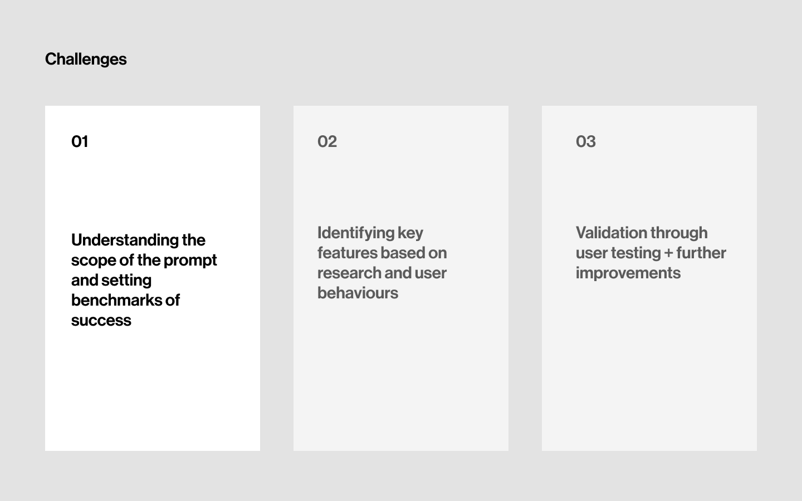

Managing Building Operations
Project Timeline
January 2020 (1 week)
Project Type
Design Challenge
Role
Sole Designer; Research, UX/UI Design, Visual Design
A solution for building operations and school campuses
Managing building operations is an exploratory solution to the Google 2020 UX Design challenge this year. The proposed solution passed the challenge and made it to the project matching stage.
This design challenge is hypothetically built as a Progressive Web App (PWA), where students and campus-goers can communicate and report campus issues, in which the campus management can respond accordingly.
Most people don't care much about public facilities and maintenance because there's a lack of social accountability for shared spaces.
But what if thousands of $ dollars could be saved, and environmental damage reduced, if each of us took our part in maintaining campus facilities? That was an initial assumption I had, and it was important to understand exactly what problem I was solving for and its project scope.

Breaking down the prompt allowed me to understand that I was designing for both the individuals reporting the issues, as well as the management resolving the issues. This led me to conduct interviews and surveys with both sides - students and faculty, as well as school operations and management.